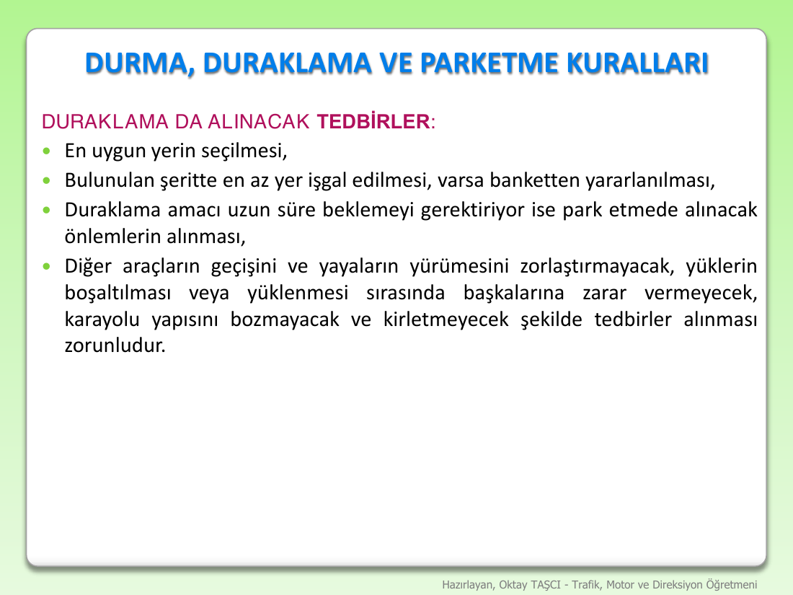
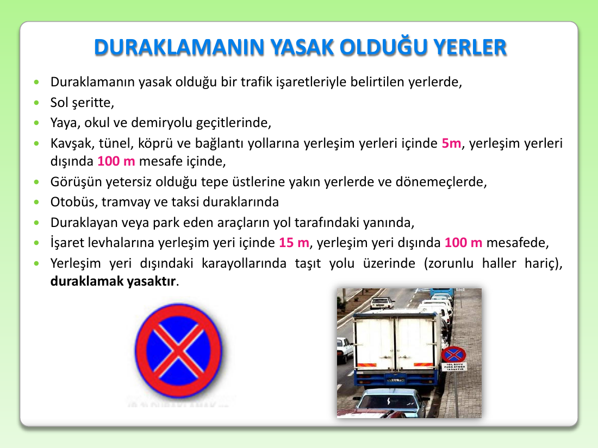
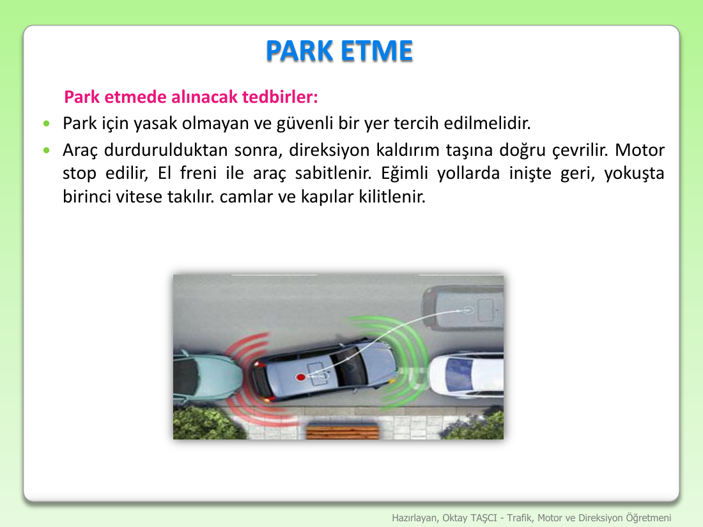
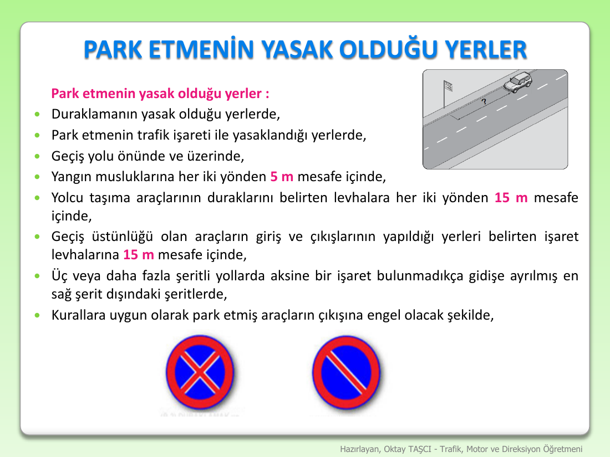
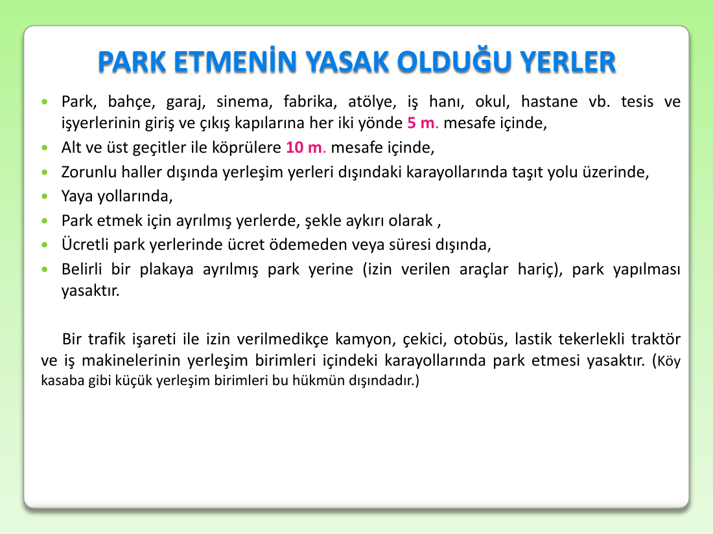
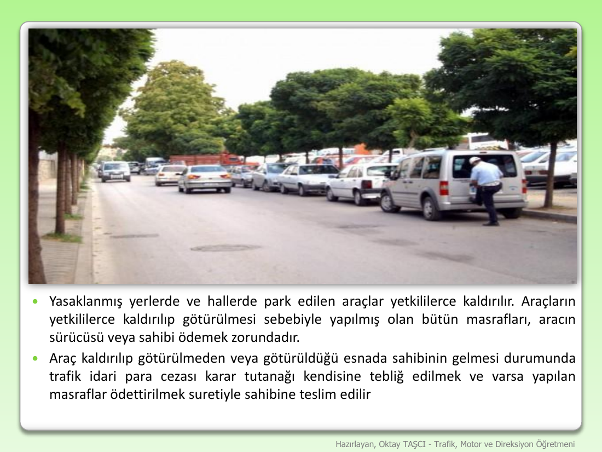

Duraklama ve Alınacak Tedbirler — Stopping (Short-halt) and Precautions
Last updated: 2026-04-18
Slides covered: SLIDE 1 — Duraklamada alınacak 3 tedbir grubu (yer seçimi, motor+vites+el freni+takoz, diğerlerine zarar verme yasağı) · SLIDE 2 — Duraklamanın yasak olduğu yerler (9-maddelik yasak yer listesi + kritik mesafeler: 5m / 100m / 15m / 100m) · SLIDE 3 — Park etmede alınacak tedbirler (direksiyon kaldırıma çevirme + motor stop + el freni + vites: inişte geri / yokuşta 1 + cam-kapı kilit) · SLIDE 4 — Park etmenin yasak olduğu yerler (yangın musluğu 5m, durak levhası 15m, geçiş üstünlüğü levhası 15m, 3+ şeritte sağ-şerit dışı, başkasının çıkışını engelleme)
1. Overview — Görev (Purpose)
Turkish traffic law distinguishes two kinds of non-moving stops:
| Term | Meaning | Typical duration | Driver stays? |
|---|---|---|---|
| Duraklama | Short halt (pick up / drop off, brief pause) | ≤ 5 minutes | Usually yes |
| Park etme | Parking (long-term stop) | > 5 minutes | Usually no |
This slide covers DURAKLAMA — the short pause, typically to let a passenger out, quickly grab something, or wait for a light to clear. Even this brief stop has mandatory precautions because a poorly-chosen duraklama spot can:
- Block traffic flow behind you.
- Block a pedestrian walkway.
- Cause your parked car to roll (if on a slope).
- Damage the road surface (heavy loads).
The slide enumerates 3 groups of precautions, which map cleanly to: where you stop, what you do to the vehicle, and how you avoid harming others.
2. SLIDE 1 — Duraklamada Alınacak Tedbirler

What the slide showed
A "DURAKLAMA VE ALINACAK TEDBİRLER" header, then a pink sub-header "DURAKLAMA DA ALINACAK TEDBİRLER:" followed by 3 bullet groups.
Group 1 — Choose the right spot
En uygun yerin seçilmesi, bulunulan şeritte en az yer işgal edilmesi, varsa banketten yararlanılması.
Select the most suitable spot; occupy as little of the lane as possible; use the banket (shoulder) when one exists.
Group 2 — What to do to the vehicle (if the halt will be long)
Duraklama amacı uzun süre beklemeyi gerektiriyorsa;
- Motorun durdurulması — shut off the engine.
- Uygun vitese takılması — leave it in an appropriate gear.
- El freni ile tespit edilmesi — engage the parking (hand) brake.
- Gerekli hallerde park ışıklarının yakılması — when needed, turn on the park lights (side markers).
- Yolun eğimi gerektiriyorsa, uygun tekerleklere uygun yönde TAKOZ konulması — if on a slope, place a wheel chock (takoz) on the appropriate wheels in the appropriate direction.
Group 3 — Don't harm others
Diğer araçların geçişini ve yayaların yürümesini zorlaştırmayacak, yüklerin boşaltılması veya yüklenmesi sırasında başkalarına zarar vermeyecek, karayolu yapısını bozmayacak ve kirletmeyecek şekilde tedbirler alınması zorunludur.
Measures must be taken so that: (a) other vehicles' passage is not obstructed, (b) pedestrians' movement is not obstructed, (c) during loading/unloading no one is harmed, (d) the road structure is not damaged (e.g. heavy loads cracking asphalt), (e) the road is not polluted (e.g. fuel/oil leaks).
Clean English explanation
Group 1 — "En uygun yer" (the spot-selection principle)
- En uygun yer — a spot where you won't block traffic or obscure sight lines. Not on a curve, not on a tepe üstü (hilltop), not within 5 m of a kavşak or pedestrian crossing (see [yasak duraklama/park yerleri] — to be covered in a later slide).
- En az yer işgal edilmesi — if your lane is narrow, pull as far right as safely possible. Don't stop in the middle.
- Banket varsa kullan — if the road has a banket (paved or compacted shoulder), pull onto it. This gets you completely out of the traffic lane. Only roads without a banket (city streets, narrow lanes) force you to duraklama in-lane.
Group 2 — The 5-step vehicle-preparation sequence
The order matters (this is also the standard driving-school direksiyon test procedure):
- Motorun durdurulması — engine OFF. Saves fuel, reduces emissions, reduces noise, reduces accidental-ignition risk.
- Uygun vitese takılması — leave in gear. Manuel arabalar: 1. vites or R (uphill = 1, downhill = R). Otomatik: P (Park). This is the backup to the hand brake — if the cable snaps, the transmission's compression holds the car.
- El freni ile tespit — parking brake ON. The primary restraint.
- Park ışıkları (gerekli hallerde) — side markers if low visibility (dusk, fog, rain, unlit road). In a bright parking lot you don't need them. On a dark shoulder of a rural road, you absolutely do.
- Takoz (gerekli hallerde) — wheel chocks on a slope. Direction rule: chocks go on the DOWNHILL side of the wheels, against the direction the car would roll.
The takoz direction rule (exam-favorite detail)
| Scenario | Chock where |
|---|---|
| Uphill (yokuş yukarı), driver facing UP | Behind the rear wheels (car would roll back) |
| Downhill (yokuş aşağı), driver facing DOWN | In front of the front wheels (car would roll forward) |
One chock is legally enough, but safety-conscious drivers (especially trucks) use two.
Group 3 — The "don't harm others" checklist
The slide's Group 3 is effectively a "consideration" rule covering 5 distinct harms:
| # | Harm to avoid |
|---|---|
| 1 | Blocking other vehicles' passage |
| 2 | Blocking pedestrians' passage |
| 3 | Injuring people during cargo loading/unloading |
| 4 | Damaging the road structure (heavy axle loads, oil drips eating asphalt) |
| 5 | Polluting the road (littering, spills, effluent) |
All five can bring a fine even if the duraklama itself is in a technically-legal spot.
Critical exam fact
Duraklamada 3 tedbir grubu:
(1) Yer seçimi: en uygun yer + şeritte en az yer işgali + varsa banket.
(2) Uzun beklemede araç: motoru kapat + uygun vitese tak + el freni + park ışıkları (gerekirse) + yokuşta takoz.
(3) Zarar vermeme: diğer araç/yaya geçişini engelleme + yükleme-boşaltmada zarar verme + yolu bozma/kirletme yasağı.
3. SLIDE 2 — Duraklamanın Yasak Olduğu Yerler

What the slide showed
Header "DURAKLAMANIN YASAK OLDUĞU YERLER" followed by a 9-item bullet list, with critical distances in pink (5 m, 100 m, 15 m, 100 m). Bottom-right shows the red-X-on-blue duraklama yasak sign and a photo of trucks illegally stopped along a roadside.
The 9 forbidden duraklama places
- Duraklamanın yasak olduğu bir trafik işaretleriyle belirtilen yerlerde — wherever a "duraklama yasak" sign (red X inside a blue circle) is posted.
- Sol şeritte — in the left lane (left lane is for overtaking / high-speed flow; never stop there).
- Yaya ve okul geçitleri ile diğer geçitlerde — on pedestrian, school, and other crossings (including railway crossings).
- Kavşak, tünel, köprü ve bağlantı yollarına — near junctions, tunnels, bridges, and connecting/ramp roads:
- Yerleşim yerleri içinde: 5 m mesafe içinde
- Yerleşim yerleri dışında: 100 m mesafe içinde
- Görüşün yeterli olmadığı tepe üstlerine yakın yerlerde ve dönemeçlerde — near hilltops where visibility is poor and on curves/bends.
- Otobüs, tramvay ve taksi duraklarında — at bus, tram, and taxi stops.
- Duraklayan veya park eden araçların yol tarafındaki yanında — alongside (on the road side of) an already-stopped or parked vehicle — this is the "no double-parking" rule.
- İşaret levhalarına mesafe:
- Yerleşim yeri içinde: 15 m
- Yerleşim yeri dışında: 100 m
- Zorunlu haller dışında yerleşim yerleri dışındaki karayollarında, taşıt yolu üzerinde — outside towns (on highways), never stop on the carriageway itself unless forced by an emergency — pull onto the banket.
Clean English explanation
The list is structured around 4 kinds of danger: blocked traffic flow (lane/junction/bridge), blocked sight lines (hill/curve/tunnel), blocked services (crossings, stops, signs, fire services), and forced double-blocking (next to another parked car).
The critical-distance table (memorize cold)
| Feature | Yerleşim içi (in town) | Yerleşim dışı (outside town) |
|---|---|---|
| Kavşak / tünel / köprü / bağlantı yolu | 5 m | 100 m |
| İşaret levhaları | 15 m | 100 m |
Mnemonic: in-town distances are small (5 m / 15 m) because spaces are tight; outside-town distances are both 100 m because highway speeds mean a driver needs far more warning to see around a stopped vehicle.
The "sol şerit" trap
Left lane is never for duraklama — not in town, not on highways, not even "for a second." Exam answers that say "sol şerite yanaşarak durulabilir" are always wrong. You always stop to the right (sağa yanaşarak).
The "double-parking" rule (item 7)
If another car is already legally stopped or parked on the side of the road, you may not stop alongside it on the road side — that would force a third vehicle behind you to swerve into oncoming traffic. This is called çift sıra duraklama/park etme and is one of the most cited duraklama violations.
Critical exam fact
Duraklama yasak yerleri 4 mesafe: kavşak/tünel/köprü → 5 m (içinde) / 100 m (dışında); işaret levhası → 15 m (içinde) / 100 m (dışında).
Sol şerit, durak (otobüs/tramvay/taksi), tepe üstü/dönemeç, geçit (yaya/okul), yol tarafındaki yanında → her zaman yasak.
4. SLIDE 3 — Park Etmede Alınacak Tedbirler

What the slide showed
Header "PARK ETME" with pink sub-header "Park etmede alınacak tedbirler:" and a 2-bullet list. Below it, a top-down illustration of a car parallel-parking between two others (red/green proximity arcs around its corners).
- Park için yasak olmayan ve güvenli bir yer tercih edilmelidir. — Choose a spot that's not in a no-parking zone and is genuinely safe.
- Araç durdurulduktan sonra, direksiyon kaldırım taşına doğru çevrilir. Motor stop edilir. El freni ile araç sabitlenir. Eğimli yollarda inişte geri, yokuşta birinci vitese takılır. Camlar ve kapılar kilitlenir.
The 6-step park-etme sequence (in order)
- Yer seçimi — a spot that's not yasak (see SLIDE 4) and is güvenli (visible, level if possible, no falling-tree risk, etc.).
- Direksiyonu kaldırım taşına doğru çevir — turn the steering wheel toward the curb. If the parking brake fails, the front wheels bite the kaldırım (curb stone) instead of rolling into the street.
- Motoru stop et — engine OFF.
- El freni ile sabitle — engage the parking brake firmly (not just "a click"). This is the primary restraint for a parked car.
- Uygun vitese tak (eğimli yollarda):
- İnişte (downhill / yokuş aşağı) → geri vitese (R)
- Yokuşta (uphill / yokuş yukarı) → birinci vitese (1)
- (On level ground, 1st or R; automatic → P.)
- Cam ve kapıları kilitle — close the windows, lock the doors. Theft prevention.
Clean English explanation
Why the steering wheel goes toward the curb
This is the #1 most-tested park-etme detail. If the hand brake fails and the car starts to roll:
- Wheels turned toward curb → car rolls a few cm, hits the curb, stops.
- Wheels straight → car rolls down the road, hits someone or something.
- Wheels turned away from curb → car rolls into the road, becomes a moving obstacle.
So: direksiyonu her zaman kaldırıma çevir.
Why the gear choice depends on slope direction
A manual car's transmission acts as a compression brake. The choice of gear directs that compression against the direction the car wants to roll:
- Yokuş yukarı (uphill) — car wants to roll backward. Birinci vites (1) resists forward motion, which is the opposite of rolling backward — but 1 has the highest torque multiplication and is standard practice.
- Yokuş aşağı (downhill / iniş) — car wants to roll forward. Geri vites (R) resists forward motion directly.
- Either way, gear + parking brake = redundant safety.
Level ground vs slope
On flat ground, the dikram-to-curb + motor off + hand brake is enough; vites is a precaution but the slope rule is what the exam cares about.
Critical exam fact
Park etme 6 adımı: güvenli yer → direksiyon kaldırıma → motor stop → el freni → vites (iniş = R, yokuş = 1) → cam + kapı kilit.
Exam-favorite: "Eğimli yolda park eden aracın direksiyonu hangi yöne çevrilir?" → kaldırım tarafına.
5. SLIDE 4 — Park Etmenin Yasak Olduğu Yerler

What the slide showed
Header "PARK ETMENİN YASAK OLDUĞU YERLER" with pink sub-header "Park etmenin yasak olduğu yer ve haller:" and an 8-bullet list. Top-right shows an illustration of a car parked near a traffic sign with a "?" over it. Bottom-center shows both Turkish parking-prohibition signs side by side:
- Red X on blue circle = Duraklama yasak (no stopping AT ALL — so of course no parking)
- Red diagonal slash on blue circle = Park etme yasak (no parking — but brief duraklama allowed)
The 8 forbidden park-etme places
- Duraklamanın yasak olduğu yerlerde — everywhere duraklama is forbidden is automatically park-forbidden too (so SLIDE 2's whole 9-item list applies here as well).
- Park etmenin trafik işareti ile yasaklandığı yerlerde — wherever the park etme yasak sign (red diagonal slash, blue circle) is posted.
- Geçiş yolu önünde ve üzerinde — in front of and on a crossing path (driveway, pedestrian entry, gated passage).
- Yangın musluklarına her iki yönden 5 m mesafe içinde — within 5 m (both directions) of a fire hydrant.
- Yolcu taşıma araçlarının duraklarını belirten levhalara her iki yönden 15 m mesafe içinde — within 15 m (both directions) of a bus/tram/taxi stop sign.
- Geçiş üstünlüğü olan araçların giriş ve çıkışlarının yapıldığı yerleri belirten işaret levhalarına 15 m mesafe içinde — within 15 m of the sign marking entrances/exits of emergency vehicles (fire station, hospital ambulance bay, police garage).
- Üç veya daha fazla şeritli yollarda aksine bir işaret bulunmadıkça gidişe ayrılmış en sağ şerit dışındaki şeritlerde — on roads with 3 or more lanes (per direction), you may only park on the rightmost lane of your direction of travel; any other lane is forbidden unless a sign says otherwise.
- Kurallara uygun olarak park etmiş araçların çıkışına engel olacak şekilde — in any way that would block the exit of a legally parked vehicle.
Clean English explanation
The "duraklama forbidden → park also forbidden" rule (item 1)
This is the single most important structural point on the whole two-slide pair: every place on SLIDE 2's list is automatically on SLIDE 4's list too, plus SLIDE 4 adds 7 more places on top. So:
Park yasak yerler = Duraklama yasak yerler + 7 ek yer.
You can halt briefly (duraklama) in a park-only-forbidden spot (e.g. within 5 m of a fire hydrant). You cannot halt at all in a duraklama-forbidden spot (e.g. on a crosswalk).
The critical distances (memorize)
| Feature | Distance | Both sides? |
|---|---|---|
| Yangın musluğu (fire hydrant) | 5 m | evet (her iki yönden) |
| Yolcu taşıma durağı levhası (bus/tram/taxi stop sign) | 15 m | evet |
| Geçiş üstünlüğü levhası (emergency-vehicle entry/exit sign) | 15 m | evet |
Mnemonic: Fire hydrant (smallest, most local) = 5 m. Sign-posted services (durak + geçiş üstünlüğü) = 15 m.
The 3+ lane rule (item 7)
On roads with 3 or more lanes in your direction, parking is only allowed in the rightmost lane of your direction. The middle and inner lanes are for moving traffic. Left-lane parking on a multi-lane road is an automatic violation.
The "blocking exit" rule (item 8)
Even on a legal parking spot, if your car's position prevents another legally-parked car from leaving, your parking is illegal. A common example: parking perpendicular behind a row of parallel-parked cars, trapping one.
Critical exam fact
Park yasak mesafeler: yangın musluğu 5 m, durak levhası 15 m, geçiş üstünlüğü aracı giriş/çıkış levhası 15 m — her iki yönden.
Rule: Duraklama yasaksa park da yasaktır; tersi değildir. 3+ şeritli yolda sadece en sağ şerite park edilebilir.
The two signs — don't mix them up
| Sign | Appearance | Meaning |
|---|---|---|
| Duraklama yasak | Red X on blue circle | No stopping at all — not even for 1 second |
| Park etme yasak | Red diagonal slash on blue circle | No parking — brief duraklama (≤5 dk) still allowed |
Exam trap: the two signs look nearly identical at a glance. The X (kesişme) is stricter than the slash (tek çizgi).
5B. SLIDE 4 — Park Etmenin Yasak Olduğu Yerler (devamı / page 2)

What the slide showed
Same "PARK ETMENİN YASAK OLDUĞU YERLER" header, continuing the bullet list with 8 more items plus a closing paragraph about trucks/tow trucks/buses/tractors/work machines.
The 8 additional forbidden park-etme places
- Park, bahçe, garaj, sinema, fabrika, atölye, iş hanı, okul, hastane vb. tesis ve işyerlerinin giriş ve çıkış kapılarına her iki yönde 5 m mesafe içinde — within 5 m (both sides) of entrance/exit gates of parks, gardens, garages, cinemas, factories, workshops, offices, schools, hospitals and similar facilities.
- Alt ve üst geçitler ile köprülere 10 m mesafe içinde — within 10 m of underpasses, overpasses, and bridges.
- Zorunlu haller dışında yerleşim yerleri dışındaki karayollarında taşıt yolu üzerinde — outside towns (highways), never on the carriageway itself except in emergencies (mirrors the duraklama rule — but even stricter for parking).
- Yaya yollarında — on pedestrian pathways / sidewalks.
- Park etmek için ayrılmış yerlerde, şekle aykırı olarak — in designated parking spots but not parked in the marked shape (crooked / sideways / across lines).
- Ücretli park yerlerinde ücret ödemeden veya süresi dışında — at paid parking lots without paying, or after the paid time has expired.
- Engelli araçları için ayrılmış park yerlerinde (engelli araçları hariç) — in disabled-driver-only spots (unless you are a disabled driver).
- Belirli kişi, kurum ve kuruluşlara ait araçlara trafik komisyonları kararları ile ayrılmış ve bir işaretle belirlenmiş bulunan park yerlerinde (izin verilen araçlar hariç) — in parking spots reserved by traffic-commission decision for specific persons/institutions/organizations and marked with a sign (unless you are an authorized vehicle).
…Park yapması yasaktır.
Closing clause — kamyon, çekici, otobüs, lastik tekerlekli traktör, iş makineleri
Bir trafik işareti ile izin verilmedikçe kamyon, çekici, otobüs, lastik tekerlekli traktör ve iş makinelerinin yerleşim birimleri içindeki karayollarında park etmesi yasaktır. (Köy kasaba gibi küçük yerleşim birimleri bu hükmün dışındadır.)
Unless a traffic sign expressly permits it, trucks (kamyon), tow trucks (çekici), buses (otobüs), rubber-wheeled tractors (lastik tekerlekli traktör), and work machines (iş makineleri) may not park on roads inside settled areas. Small villages/towns (köy, kasaba) are exempt from this rule.
Clean English explanation
The new distance (item 2): bridges/underpasses/overpasses = 10 m
This is the only "10 m" in the entire duraklama+park rulebook, and the exam loves it. Distinguish carefully:
| Feature | Duraklama yasak | Park yasak |
|---|---|---|
| Kavşak / tünel / köprü / bağlantı yolu | 5 m içinde | — (covered by duraklama rule) |
| Alt geçit / üst geçit / köprü | — (in duraklama list as "köprü") | 10 m içinde (slide 4B) |
| Yangın musluğu | — | 5 m içinde, her iki yönden |
| Durak levhası / geçiş üstünlüğü levhası | — | 15 m içinde, her iki yönden |
| İşaret levhası (genel) | 15 m (içi) / 100 m (dışı) | — |
| Tesis/işyeri giriş-çıkış kapısı | — | 5 m içinde, her iki yönden |
Mnemonic: Fire hydrant + facility gates = 5 m; bridges/underpasses = 10 m; service-indication signs (durak, geçiş üstünlüğü) = 15 m.
The 5 accessibility/compliance rules (items 4–8)
Items 4–8 are compliance-based, not distance-based:
- Yaya yolu = sidewalk (never park there, no exception for "brief" halts).
- "Şekle aykırı" (item 5) means parked crookedly in a marked spot — still a ticketable offense even in a legal area.
- Ücret ödemeden / süre dışı (item 6) = not paying, or overstaying the meter.
- Engelli park yeri (item 7) — huge fines, exam-favorite detail. Only disabled drivers (with the badge) may use them.
- Rezerve park (item 8) — spots reserved by commission decision for specific institutions (e.g. consulate, hospital staff, police).
The heavy-vehicle rule (closing clause)
Inside cities/towns, heavy vehicles — kamyon, çekici, otobüs, lastik tekerlekli traktör, iş makinesi — cannot be parked on city roads unless a sign specifically allows it. The rule exists because these vehicles block sight lines, narrow lanes, and damage pavement. Exception: small villages and towns (köy, kasaba) are out of scope of this rule, because they don't have dedicated heavy-vehicle lots.
Critical exam fact
Park yasak mesafeler (tam liste):
- 5 m — yangın musluğu (her iki yön), tesis/işyeri giriş-çıkış kapısı (her iki yön).
- 10 m — alt/üst geçit, köprü.
- 15 m — yolcu taşıma durağı levhası, geçiş üstünlüğü levhası (her iki yön).Yerler (mesafesiz): yaya yolu, engelli park yeri, rezerve park yeri, ücretli parkta ödemesiz, şekle aykırı park.
Ağır araçlar (kamyon/çekici/otobüs/traktör/iş makinesi): yerleşim içi karayolunda yasak, izin işareti yoksa. Köy/kasaba muaf.
5C. SLIDE 5 — Yasak Yerlerde Park Edilen Araçların Kaldırılması

What the slide showed
Photo of a long row of cars parallel-parked along a tree-lined street, with a traffic officer walking between them inspecting. Two bullet points below describe the enforcement / tow-away procedure.
The enforcement procedure
- Yasaklanmış yerlerde ve hallerde park edilen araçlar yetkililerce kaldırılır. Araçların yetkililerce kaldırılıp götürülmesi sebebiyle yapılmış olan bütün masrafları, aracın sürücüsü veya sahibi ödemek zorundadır.
Vehicles parked in forbidden places or situations are towed/removed by the authorities. All costs caused by this removal (tow fees, storage fees, administrative fees) must be paid by the driver or owner of the vehicle.
- Araç kaldırılıp götürülmeden veya götürüldüğü esnada sahibinin gelmesi durumunda trafik idari para cezası karar tutanağı kendisine tebliğ edilmek ve varsa yapılan masraflar ödettirilmek suretiyle sahibine teslim edilir.
If the owner arrives before the tow truck leaves (or during the removal), the vehicle is returned — but only after the traffic fine decision document (karar tutanağı) has been served and any removal costs already incurred are paid.
Clean English explanation
This slide codifies the enforcement escalation ladder for illegal parking:
- Find car in yasak yer → officer issues para cezası (administrative fine).
- Car still there / owner absent → call tow truck (çekici).
- Owner shows up during tow → stop the tow, serve the fine document, charge any costs incurred so far, release car.
- Owner absent / too late → car gets taken to impound (otopark), owner must pay fine + tow + storage to reclaim.
Key financial rule: all costs (tow, impound storage, admin) fall on sürücü veya sahibi — the driver OR the owner. If the driver and owner are different people (e.g. company car), the owner is still liable.
Exam-favorite subtlety: "karar tutanağı kendisine tebliğ edilmek" means the fine document must be officially served — not just left on the windshield. If the owner arrives mid-tow, they sign it in person.
Critical exam fact
Yasak yerde park eden aracın akıbeti:
1. Yetkililerce kaldırılır (towed).
2. Bütün masrafları sürücü veya sahip öder.
3. Sahibi zamanında gelirse → karar tutanağı tebliğ + varsa masraflar ödenip araç teslim edilir.
6. Duraklama vs Park — the two-term distinction (critical for exam)

| Özellik | Duraklama | Park Etme |
|---|---|---|
| Süre | Kısa (≤ 5 dk) | Uzun (> 5 dk veya sürücüsüz) |
| Sürücü araçta mı? | Genelde evet | Genelde hayır |
| Yolcu indirme/bindirme, yük alma | Duraklama sayılır | — |
| Motor çalışır mı? | Kısa sürede evet, uzunda kapatılır | Her zaman kapalı |
| Yasak yerleri | Ayrı liste (kavşaklar, geçitler, köprüler…) | Ayrı liste (daha geniş) |
Exam trap: soru "duraklamada ne yapılmalı" diye sorarsa, SLIDE 1'deki 3 grup geçerlidir. "Park etme" diye sorarsa ek kurallar var (motor daima kapalı, sürücü araçta değil, vb. — to be captured when that slide appears).
4. Why this matters for the exam
- "Duraklamada aracın motoru hangi durumda durdurulur?" → Duraklama uzun süre beklemeyi gerektiriyorsa.
- "Yolun eğimli olduğu bir duraklamada sürücü ne yapmalıdır?" → Uygun tekerleklere uygun yönde TAKOZ koyar.
- "Duraklama sırasında yolun hangi kısmı kullanılmalıdır?" → Bulunulan şeritte en az yer işgal edilmeli, varsa BANKET kullanılmalıdır.
- "Duraklamada el freni kullanımı zorunlu mudur?" → Uzun süreli beklemelerde evet.
- "Duraklama sırasında hangi durumda park ışığı yakılır?" → Gerekli hallerde (gece, sis, karanlık yerlerde).
- "Yükleme/boşaltma sırasında nelere dikkat edilir?" → Başkalarına zarar verilmemesi, trafik ve yaya geçişinin engellenmemesi, yol yapısının bozulmaması, yolun kirletilmemesi.
- "Duraklama ile park etme arasındaki fark nedir?" → Duraklama kısa süreli (amaç yolcu indirme/bindirme, kısa bekleme); park etme uzun süreli (sürücü genellikle araçta değil).
5. Memorize These
DURAKLAMA 3 TEDBİR GRUBU:
(1) Yer: uygun yer seçimi + şeritte az yer işgali + BANKET varsa kullan.
(2) Araç (uzun beklemede): motor kapat + vites tak + el freni + park ışığı (gerekirse) + takoz (yokuşta).
(3) Zarar verme yasağı: diğer araç/yaya engellenmez, yükleme/boşaltmada kimse zarar görmez, yol yapısı bozulmaz, yol kirletilmez.Takoz yönü: Yokuş yukarı → arka tekerleğin arkasına · Yokuş aşağı → ön tekerleğin önüne.
Duraklama ≤ 5 dk; park etme > 5 dk veya sürücüsüz.
6. Consolidated Exam Vocabulary
| Turkish | English | Quick meaning |
|---|---|---|
| Duraklama | Short halt / brief stopping | ≤ 5 minutes |
| Park etme | Parking | Long-term stop |
| Duraklama amacı | Purpose of the halt | Passenger drop-off, loading, etc. |
| Tedbir | Precaution / measure | Safety action |
| En uygun yer | The most suitable spot | Spot-selection principle |
| Bulunulan şerit | The current lane | Where you're stopping |
| En az yer işgal etmek | Occupy as little space as possible | Lane-use principle |
| Banket | Road shoulder | Paved/compacted side of the road |
| Motoru durdurmak | To turn off the engine | Kill ignition |
| Uygun vites | Appropriate gear | 1st/R manual, P automatic |
| El freni | Parking brake / handbrake | The mechanical brake |
| Tespit etmek | To secure / fix in place | Lock the vehicle |
| Park ışıkları | Parking lights / side markers | Low-level visibility lights |
| Yolun eğimi | Road slope | Gradient / incline |
| Takoz | Wheel chock | Wedge placed against a tire |
| Uygun tekerleklere | On the appropriate wheels | Depends on slope direction |
| Uygun yönde | In the appropriate direction | Against potential roll |
| Yüklerin boşaltılması | Unloading of cargo | Removing goods |
| Yüklenmesi | Loading | Putting goods in |
| Karayolu yapısı | Road structure | Asphalt, base, markings |
| Kirletmek | To pollute / dirty | Spill fluids, drop litter |
| Zarar vermek | To cause damage | Harm to people/property |
7. Cross-references
- Park etme kuralları + yasak yerleri → not yet captured (coming slide)
- Duraklamanın yasak olduğu yerler (kavşak 5 m, yaya geçidi 5 m, tepe üstü, dönemeç, köprü, tünel vb.) → not yet captured
- El freni + park freni (araç tekniği açısından) → 09-fren-sistemi.md (araç tekniği — to be added)
- Uygun vites / motor freni — duraklama ve yokuş başlangıcı → 08-güç-aktarma-organları.md
- Banket + yol bölümleri → 02-karayolu-bölümleri.md
İlgili çalışma materyalleri
Ders kitabı sayfaları
- 📄 Sayfa 123: PARK ETMENİN YASAK OLDUĞU YERLER273.4
- 📄 Sayfa 122: PARK ETMENİN YASAK OLDUĞU YERLER221.4
- 📄 Sayfa 120: DURAKLAMANIN YASAK OLDUĞU YERLER195.2
- 📄 Sayfa 119: DURMA, DURAKLAMA VE PARKETME KURALLARI168.1
- 📄 Sayfa 124: Yasaklanmış yerlerde ve hallerde park edilen araçlar yetkililerce kaldırılır. Araçların158.6
- 📄 Sayfa 121: PARK ETME118.1